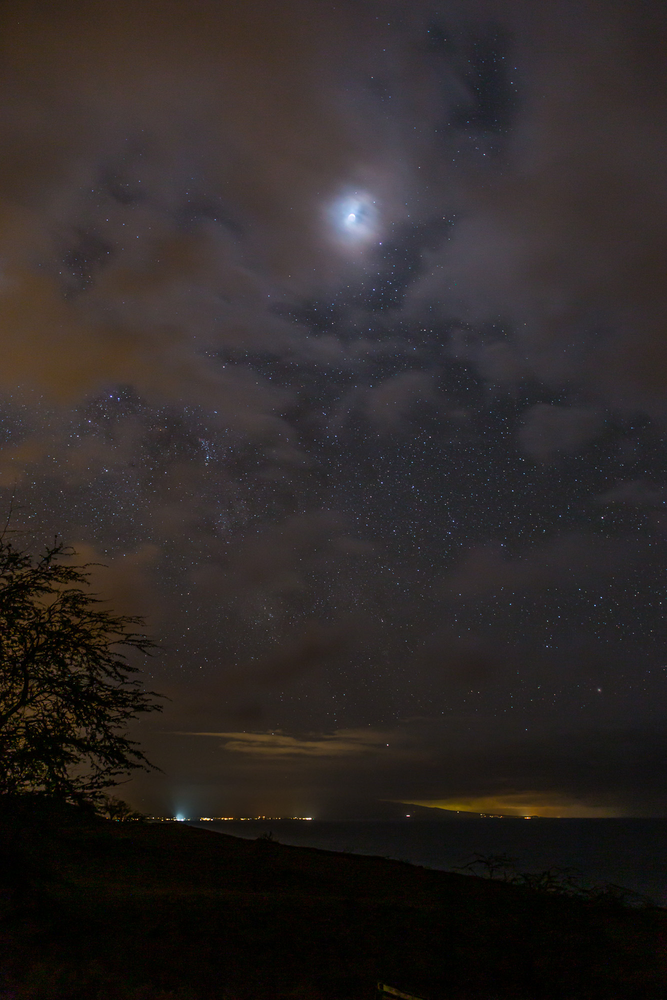
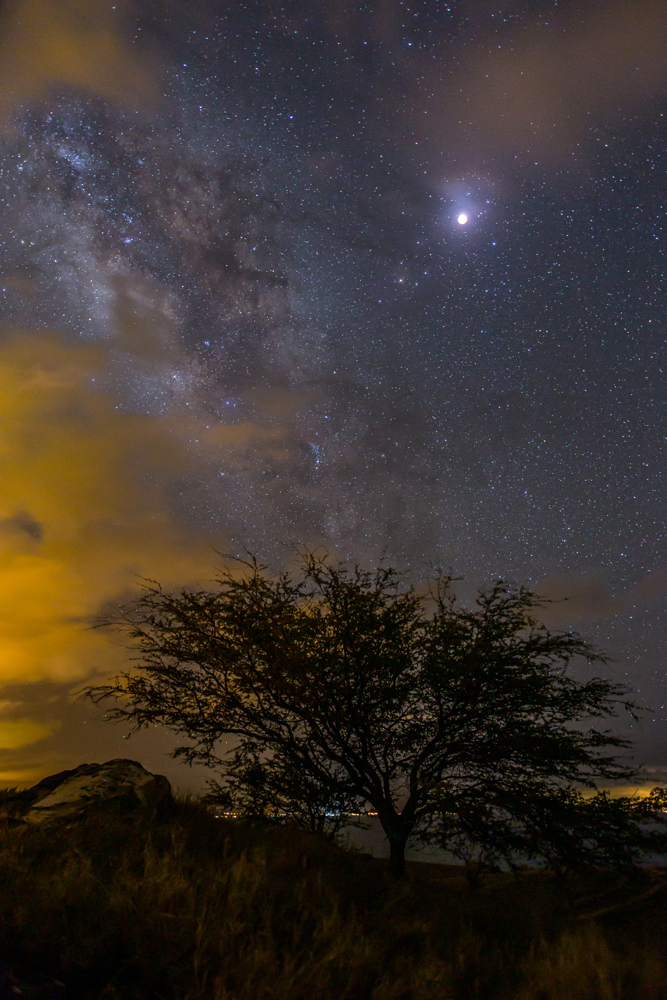

Last night's lunar eclipse was well positioned for viewing from Hawaii. The local weather, on the other hand, was less cooperative. I had hoped to photograph the eclipse from my back yard, but the skies had alternated between clear and completely cloudy all evening. With about 40 minutes to go before the partial phase started, the clouds were opaque at my house, so I hit the road looking for clear skies.
I drove down to the coast. First turning South from Kawaihae toward Hapuna Beach, but I turned around after a few miles and headed back North. I found a pullout off the road a few miles North of Kawaihae which was clear. Clouds were building to the East over the Kohalas, but there was a view South along the coast and the Moon was visible.
I set up my tripod and started taking images for the time lapse sequence I was hoping to assemble. The plan was to build a sequence of images of the Moon going in to eclipse, similar to what I'd done for a previous lunar eclipse over the Halema'uma'u vent of Kilauea Volcano (see my nightscapes gallery). Unfortunately, the clouds over the Kohalas slowly built out and covered the Moon a few minutes before totality was set to begin.

The photo above is one of the last views I got of the partially eclipsed Moon before the clouds covered it at my first location.
I got in the car and headed South and found a hole in the clouds just a few miles away. I quickly set up the tripod and got a few images during totality.

Totality. Imaged from the side of the Akoni Pule Highway just North of Kawaihae.
I'm pleased with the result, even if it wasn't what I was planning. The Milky Way, clouds illuminated by lights from Kawaihae, and the Moon make for some nice drama in the skies. The random tree in the foreground works to give it some depth as well. I've been unable to build a good HDR version of the image above, partially because I did not get the full set of bracketed exposures I would have liked thanks to the last minute move. I didn't reach this location until totality was already well under way and I was rushing to get a few images before it ended.